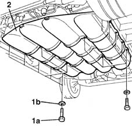

1042E60 CNG CANISTER ASSEMBLY SHIELD/PROTECTION / - R.R.
- Path
- Procedures > 10 ENGINE UNIT > 1042 METHANE GAS CANNISTER AND TUBES > 1042E gas cannister brackets and protectors > 1042E60 CNG CANISTER ASSEMBLY SHIELD/PROTECTION / - R.R.
- Kind
- repair procedure (removal / refitting; the operation number is the code)
- Applies to
- engines: 1.6 16v; all production periods; only with equipment: BIPOWER and BLUPOWER
- Interactive page
- https://sloeber94.github.io/elrnDB-fMltpl/en/#/2891473
Applies to: engines: 1.6 16v; all production periods; only with equipment: BIPOWER and BLUPOWER
 Removing
Removing
 Refitting
RefittingPlace the car on a ramp.
Disconnect the battery negative terminal.
Raise the car.
1. Undo the fixing bolts (1a) and recover the washers (1b).
2. Remove the metal shield for the CNG canisters.

Applies to: engines: 1.6 16v; all production periods; only with equipment: BIPOWER and BLUPOWER
Refitting
RemovingPosition the shield for the canisters.
Screw in and then tighten the bolts fixing the shield to the bodyshell.
 | Fastening | Component | Ø | Value (daNm) |
|---|---|---|---|---|
- | Bolt | BODYSHELL CANISTER SHIELD | M12 | 4 |
Screw in and then tighten the bolts fixing the shield to the intermediate crossmember.
| Fastening | Component | Ø | Value (daNm) |
|---|---|---|---|---|
- | Bolt | INTERMEDIATE CROSSMEMBER CANISTER SHIELD | M12 | 3 |
Screw in and then tighten the bolts fixing the shield to the bushes for the housing on the centre pins securing the canisters.
| Fastening | Component | Ø | Value (daNm) |
|---|---|---|---|---|
- | Bolt | CENTRE BUSH CANISTER SHIELD | M6 | 0.8 |
Lower the ramp.
Connect the battery negative terminal.
Topics that link to this page (12)
- 1040B32 FUEL FILLER PIPE UNION SLEEVE - R + R
- 1042A16 CNG CYLINDER UNIT - R R
- 1042A17 (One), side CANISTER left or right, for CNG CANISTER ASSEMBLY - R.R.
- 1042A18 (One), centre CANISTER left or right, for CNG CANISTER ASSEMBLY - R.R.
- 1042A42 CNG repressurizing PIPE from hose to three-way connector - R.R.
- 1042A43 CNG REPRESSURIZING PIPE FROM REPRESSURIZING VALVE TO SINGLE-ACTING VALVE - R.R.
- 1042A46 THREE-WAY CONNECTOR (one) for CNG repressurizing system' - R.R .
- 1042A70 LEFT CYLINDER OF CNG CYLINDER UNIT R R
- 1042A72 CENTRAL CYLINDER OF CNG CYLINDER UNIT R R
- 1042A74 RIGHT CYLINDER OF CNG CYLINDER UNIT R R
- 1042B10 CNG SUPPLY LINE FROM SOLENOID TO PRESSURE REDUCTION UNIT - R R
- 4410D20 front suspension intermediate beam - r r